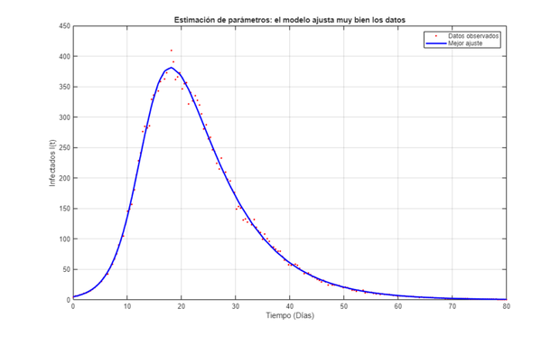
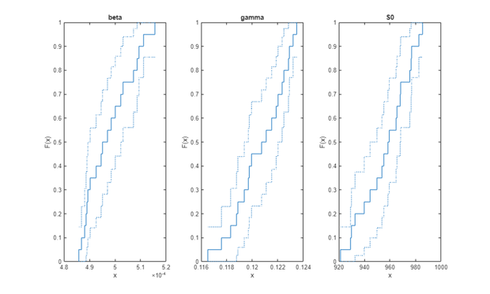
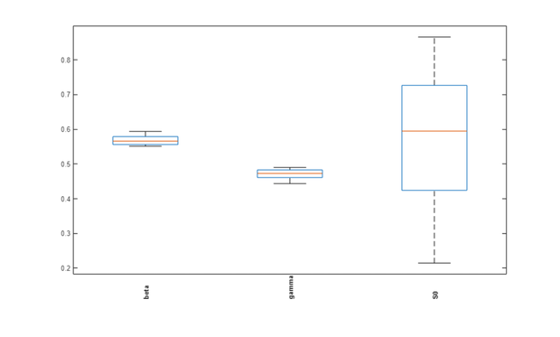
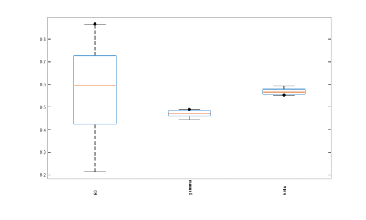
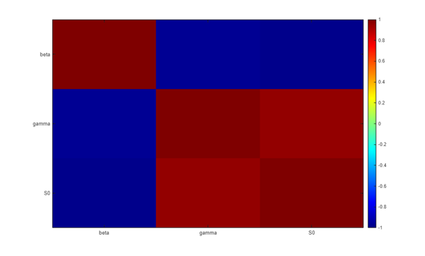
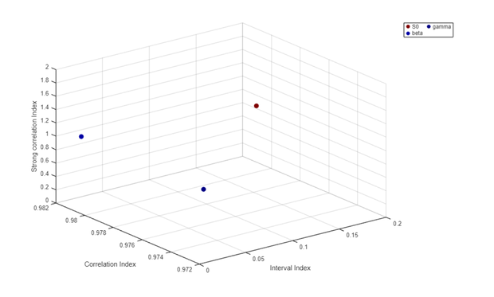
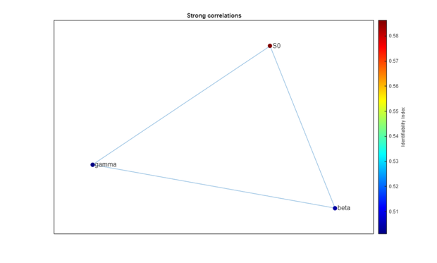

Contents
- 1. Configuración del Entorno
- 2. Modelo SIR con I0 fijo (estimamos beta, gamma, S0)
- 3. Datos "observados" sintéticos (verdad conocida + 5% de ruido)
- 4. Estimación Multicomienzo sobre los datos observados
- 5. Identificabilidad por Bootstrap
- 6. La cantidad identificable: R0 = beta*S0/gamma
- 7. PREGUNTAS Y EJERCICIOS PARA EL ESTUDIANTE
% DEMO_05_ESTIMACION Estimación de Parámetros e Identificabilidad Práctica % Curso guiado de GSUA-CSB % % Cerramos el ciclo de calibración de modelos y llegamos a la lección central del % curso: UN BUEN AJUSTE NO GARANTIZA PARÁMETROS CONFIABLES. % - ESTIMACIÓN (gsua_pe): ajustamos el modelo a datos con optimización multicomienzo. % - IDENTIFICABILIDAD (gsua_ia): generamos un ENSAMBLE de estimaciones re-ajustando % varias realizaciones de ruido (bootstrap) y analizamos su dispersión: la matriz % de correlación revela qué parámetros están entrelazados. % - CANTIDAD IDENTIFICABLE: aunque beta, gamma y S0 se dispersen mucho, su % combinación R0 = beta*S0/gamma queda determinada. Los datos identifican la % combinación, no cada parámetro por separado. % % Modelo: SIR continuo. Observamos SOLO Infectados; I0 se supone conocido (fijo) y % estimamos beta, gamma y S0.
1. Configuración del Entorno
clc; clear; close all; % --- Localización portable de la toolbox GSUA-CSB (ver Módulo 01) ----------- if isempty(which('gsua_dataprep')) candidatos = { fullfile(fileparts(mfilename('fullpath')), '..', '..', '..', 'Functions') % dentro del repo clonado fullfile(getenv('USERPROFILE'), 'MATLAB Drive', 'Toolbox', 'Functions') fullfile(getenv('USERPROFILE'), 'Documents', 'MATLAB', 'GSUA-CSB', 'Functions') }; for k = 1:numel(candidatos) if isfolder(candidatos{k}), addpath(candidatos{k}); break; end end if isempty(which('gsua_dataprep')) error(['No se encontró la toolbox GSUA-CSB en el path de MATLAB. ' ... 'Instala GSUA-CSB.mltbx o añade su carpeta Functions con addpath(...).']); end end model1_path = fullfile(fileparts(mfilename('fullpath')), '..', '..', ... '01_Introduccion_Modelos', 'matlab'); if isfolder(model1_path), addpath(model1_path); else, error('Falta el Módulo 01 en %s', model1_path); end fprintf('=========================================================================\n'); fprintf(' MÓDULO 05: ESTIMACIÓN DE PARÁMETROS E IDENTIFICABILIDAD PRÁCTICA \n'); fprintf('=========================================================================\n\n');
========================================================================= MÓDULO 05: ESTIMACIÓN DE PARÁMETROS E IDENTIFICABILIDAD PRÁCTICA =========================================================================
2. Modelo SIR con I0 fijo (estimamos beta, gamma, S0)
Un factor se FIJA dándole un rango degenerado [v v]. Fijamos I0 = 5 y dejamos libres beta, gamma y S0. Observamos únicamente la curva de Infectados (output 2).
ranges = [
1e-4, 8e-4; % beta (libre)
0.05, 0.20; % gamma (libre)
900, 999; % S0 (libre)
5, 5 % I0 (FIJO en 5)
];
[T, ~] = gsua_dataprep('sir_continuous_userdefined', ranges, ...
'domain', [0, 80], ...
'names', {'beta', 'gamma', 'S0', 'I0'}, ...
'out_names', {'Susceptibles', 'Infectados', 'Recuperados'});
T.Properties.CustomProperties.output = 2; % solo Infectados
names = T.Properties.RowNames; % {'beta','gamma','S0'}
xdata = linspace(0, 80, 200);
opt = optimoptions('lsqcurvefit', 'Display', 'off'); % silenciar el optimizador
fprintf('Factores a estimar: %s (I0 fijo en 5); se observa solo Infectados.\n\n', strjoin(names, ', '));
Setting environment to work with user-defined function Factores a estimar: beta, gamma, S0 (I0 fijo en 5); se observa solo Infectados.
3. Datos "observados" sintéticos (verdad conocida + 5% de ruido)
true_free = [5e-4; 0.12; 950]; % beta, gamma, S0 verdaderos
y_clean = squeeze(gsua_eval(true_free, T, xdata, [], false, false, false)).';
rng(3);
ydata = y_clean .* (1 + 0.05 * randn(size(y_clean)));
4. Estimación Multicomienzo sobre los datos observados
[T, res] = gsua_pe(T, xdata, ydata, 'N', 10, 'solver', 'lsqc', ... 'opt', opt, 'save', false, 'timer', false); [bestCost, ix] = min(res); best = T.Estlsqc(:, ix); fprintf('--- Mejor ajuste ---\n'); fprintf(' beta = %.3e (verdad 5.000e-04)\n', best(1)); fprintf(' gamma = %.4f (verdad 0.1200)\n', best(2)); fprintf(' S0 = %.1f (verdad 950.0)\n', best(3)); fprintf(' El ajuste es EXCELENTE (costo = %.4g). ¿Significa que los parámetros son confiables?\n\n', bestCost); y_best = squeeze(gsua_eval(best, T, xdata, [], false, false, false)).'; figure('Name', 'Mejor ajuste vs datos'); plot(xdata, ydata, 'r.', 'MarkerSize', 7, 'DisplayName', 'Datos observados'); hold on; plot(xdata, y_best, 'b-', 'LineWidth', 2, 'DisplayName', 'Mejor ajuste'); xlabel('Tiempo (Días)'); ylabel('Infectados I(t)'); title('Estimación de parámetros: el modelo ajusta muy bien los datos'); grid on; legend('Location', 'northeast');
--- Mejor ajuste --- beta = 5.103e-04 (verdad 5.000e-04) gamma = 0.1179 (verdad 0.1200) S0 = 929.4 (verdad 950.0) El ajuste es EXCELENTE (costo = 6980). ¿Significa que los parámetros son confiables?

5. Identificabilidad por Bootstrap
Una sola estimación no dice cuánta CONFIANZA merece cada parámetro. Generamos un ENSAMBLE re-ajustando B realizaciones de ruido distintas: la dispersión resultante es la incertidumbre de cada parámetro, y su ESTRUCTURA (correlación) revela los entrelazamientos.
B = 20; Est = zeros(numel(names), B); fprintf('Generando ensamble bootstrap (%d re-ajustes)...\n', B); for b = 1:B yb = y_clean .* (1 + 0.05 * randn(size(y_clean))); % nueva realización de ruido [Tb, resb] = gsua_pe(T, xdata, yb, 'N', 3, 'solver', 'lsqc', ... 'opt', opt, 'save', false, 'timer', false); [~, jx] = min(resb); Est(:, b) = Tb.Estlsqc(:, jx); end % gsua_ia analiza el ensamble: actualiza rangos a un IC de la mediana, calcula el % índice de identificabilidad por parámetro (0 = bien, 1 = mal) y abre las figuras % diagnósticas (incluida la matriz de correlación). [T, ci] = gsua_ia(T, Est, false, false, true, false); %#ok<ASGLU> fprintf('\n--- Dispersión del ensamble (coeficiente de variación) ---\n'); cv = @(v) std(v) / mean(v) * 100; for i = 1:numel(names) fprintf(' %-6s CV = %5.1f%% índice identif = %.2f\n', names{i}, cv(Est(i,:)), T.index(i)); end R = corrcoef(Est.'); fprintf('\n--- Correlación entre parámetros ---\n'); disp(array2table(R, 'RowNames', names, 'VariableNames', names)); Rabs = abs(R); Rabs(1:size(R,1)+1:end) = 0; [mx, pos] = max(Rabs(:)); [a, b2] = ind2sub(size(R), pos); fprintf('Par más entrelazado: %s <-> %s (|corr| = %.2f)\n', names{a}, names{b2}, mx); if mx > 0.9 fprintf('=> |corr| > 0.9: aunque el ajuste sea perfecto, los datos identifican su\n'); fprintf(' COMBINACIÓN, no cada parámetro por separado (no-identificabilidad práctica).\n\n'); end
Generando ensamble bootstrap (20 re-ajustes)...
--- Dispersión del ensamble (coeficiente de variación) ---
beta CV = 1.8% índice identif = 0.50
gamma CV = 1.7% índice identif = 0.50
S0 CV = 2.0% índice identif = 0.59
--- Correlación entre parámetros ---
beta gamma S0
________ ________ _______
beta 1 -0.96115 -0.9828
gamma -0.96115 1 0.95703
S0 -0.9828 0.95703 1
Par más entrelazado: S0 <-> beta (|corr| = 0.98)
=> |corr| > 0.9: aunque el ajuste sea perfecto, los datos identifican su
COMBINACIÓN, no cada parámetro por separado (no-identificabilidad práctica).






6. La cantidad identificable: R0 = beta*S0/gamma
Aunque beta, gamma y S0 se dispersen, su combinación R0 debería quedar fija: es lo que la curva de Infectados realmente determina.
R0_ens = (Est(1,:) .* Est(3,:)) ./ Est(2,:); R0_true = (true_free(1) * true_free(3)) / true_free(2); fprintf('--- Número reproductivo básico R0 = beta*S0/gamma ---\n'); fprintf(' CV de los parámetros individuales ~ %.1f%%, pero CV de R0 = %.2f%%\n', ... mean([cv(Est(1,:)), cv(Est(2,:)), cv(Est(3,:))]), cv(R0_ens)); fprintf(' R0 estimado = %.2f ± %.2f (verdad = %.2f)\n', mean(R0_ens), std(R0_ens), R0_true); fprintf('=> Moraleja: la COMBINACIÓN identificable (R0) es confiable aunque sus\n'); fprintf(' componentes por separado no lo sean.\n\n');
--- Número reproductivo básico R0 = beta*S0/gamma --- CV de los parámetros individuales ~ 1.8%, pero CV de R0 = 1.56% R0 estimado = 3.95 ± 0.06 (verdad = 3.96) => Moraleja: la COMBINACIÓN identificable (R0) es confiable aunque sus componentes por separado no lo sean.
7. PREGUNTAS Y EJERCICIOS PARA EL ESTUDIANTE
fprintf('=========================================================================\n'); fprintf(' PREGUNTAS DE ANÁLISIS Y EJERCICIOS DOCENTES (MÓDULO 05) \n'); fprintf('=========================================================================\n'); fprintf('1. Explica la correlación beta<->S0 usando R0 = beta*S0/gamma.\n'); fprintf('2. Fija S0 en su valor real (rango [950 950]) y repite. ¿Mejora la identificabilidad?\n'); fprintf('3. Observa los 3 compartimentos (output = [1 2 3]) en vez de solo Infectados.\n'); fprintf(' ¿Se rompen los entrelazamientos? ¿Bajan los CV individuales?\n'); fprintf('4. Sube el ruido de 5%% a 15%%. ¿Cómo cambian los CV y el CV de R0?\n'); fprintf('=========================================================================\n\n');
========================================================================= PREGUNTAS DE ANÁLISIS Y EJERCICIOS DOCENTES (MÓDULO 05) ========================================================================= 1. Explica la correlación beta<->S0 usando R0 = beta*S0/gamma. 2. Fija S0 en su valor real (rango [950 950]) y repite. ¿Mejora la identificabilidad? 3. Observa los 3 compartimentos (output = [1 2 3]) en vez de solo Infectados. ¿Se rompen los entrelazamientos? ¿Bajan los CV individuales? 4. Sube el ruido de 5% a 15%. ¿Cómo cambian los CV y el CV de R0? =========================================================================